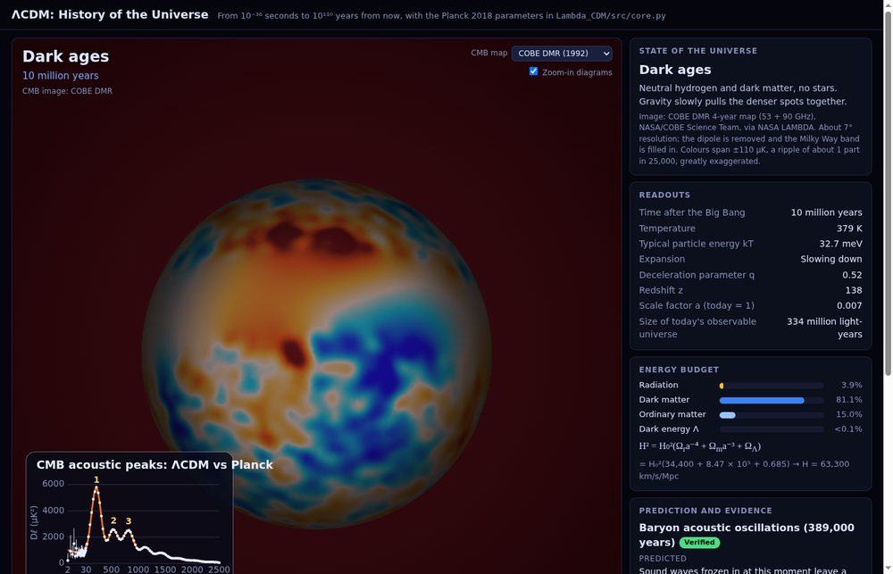
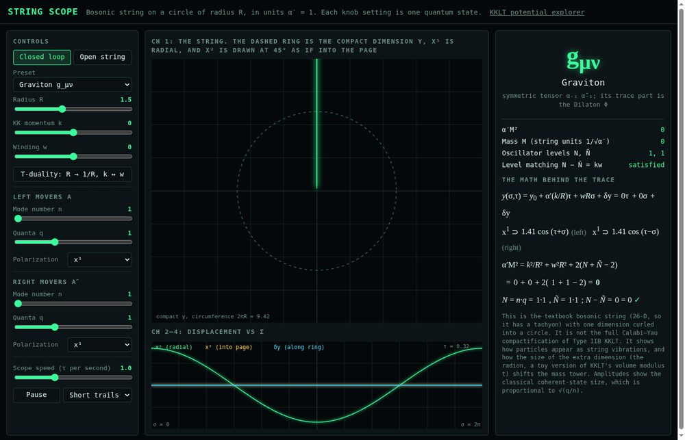
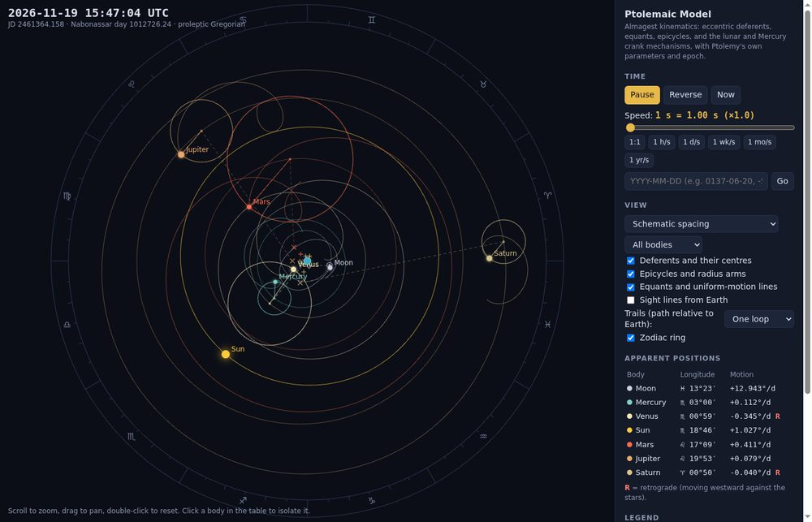

Each model turns its equations into something you can watch: named states, live equations and the observations that test it. They run here in any modern browser with nothing to install, and each one is also part of its theory's repository, where Physics IDE can open it from the file tree.

ΛCDM: History of the Universe
Slide from 10⁻³⁶ seconds to 10¹¹⁰ years. The universe grows from a dot through inflation, the quark–gluon plasma and the opaque fog to the real cosmic microwave background (COBE, WMAP or Planck) and real Hubble Ultra Deep Field galaxies, then on into the accelerating future. Feynman-diagram insets show what each early era is doing, a chart compares Planck's acoustic peaks with ΛCDM, and a timeline marks each prediction as verified, partly verified or untested.

String Scope: vibrating string states
An oscilloscope for the bosonic string on a circle. Step the oscillator quanta, momentum, winding and radius, and watch the loop vibrate while the mode expansion, mass formula and level-matching condition update live. Each state is named, from the tachyon to the graviton, dilaton, Kalb–Ramond field and photon, and T-duality is one click.

Ptolemaic Model
The Almagest in motion, with Ptolemy's own parameters and epoch: deferents, epicycles, equants, Mercury's moving centre and the lunar crank. Run it at 1:1 or years per second to watch the planets trace their retrograde loops, jump to any date, and see how far the model has drifted from the real sky since 140 AD.